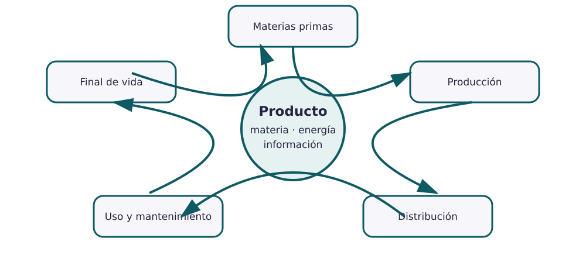

Contenido
El producto es un flujo de materia, energía e información
El ciclo de vida físico comienza antes de fabricar y continúa después del uso. Para entenderlo hay que seguir materiales, operaciones, transportes, consumos, reparaciones y residuos. Una flecha circular no significa que todo se recicle: significa que debemos preguntar qué vuelve realmente al sistema y qué se pierde.

Las cinco etapas
| Etapa | Preguntas técnicas | Impactos posibles |
|---|---|---|
| Materias primas | ¿Qué materiales? ¿De dónde proceden? ¿Se separan? | Extracción, agua, energía, pérdida de recursos |
| Producción | ¿Qué operaciones transforman y unen? ¿Qué mermas aparecen? | Energía, emisiones, rechazos, riesgos |
| Distribución | ¿Cómo se embala, almacena y transporta? | Volumen, masa, distancia, daños |
| Uso | ¿Consume energía o consumibles? ¿Se repara y mantiene? | Consumo, duración, sustituciones |
| Final de vida | ¿Se reutiliza, repara, remanufactura o recicla? | Mezcla de materiales, residuos, recuperación |
Proceso productivo: verbos y decisiones
Un esquema útil no dice solo «fábrica». Usa verbos: cortar, conformar, mecanizar, moldear, tratar, limpiar, unir, montar, comprobar y embalar. Entre operaciones coloca entradas, salidas y controles. Si no sabes una operación, indícala como pregunta y busca evidencia.
Ejemplo: botella reutilizable
Un modelo simplificado puede incluir acero y polímeros; conformado del cuerpo; fabricación de tapa y junta; limpieza; unión o montaje; prueba de fugas; acabado; embalaje; transporte; uso y lavado; reparación o sustitución de piezas; separación de materiales al final. El modelo exacto depende del diseño elegido y debe contrastarse.
Priorizar impactos
No todos los impactos son igual de importantes. Prioriza con tres criterios: magnitud, frecuencia y capacidad de mejora. Explica también la incertidumbre: si no hay un dato fiable, no inventes una cifra; describe qué dato necesitarías.
- Dibujad el ciclo físico completo y señalad las entradas y salidas más importantes.
- Añadid un esquema del proceso productivo con verbos de operación.
- Identificad al menos un impacto por etapa.
- Elegid dos impactos prioritarios y justificadlos con magnitud, frecuencia y capacidad de mejora.
- Anotad qué partes están respaldadas y qué dudas quedan abiertas.
No entreguéis todavía el dosier: se completa hasta la séptima sesión.
Lista desordenada
Ordena el primer recorrido del ciclo físico de un producto. Después pueden existir retornos para reparar, reutilizar o recuperar materiales.
- Obtener y preparar las materias primas
- Fabricar componentes, montar y controlar el producto
- Embalar, almacenar y distribuir
- Usar, mantener y reparar cuando sea posible
- Recoger, reutilizar, remanufacturar, reciclar o gestionar el residuo